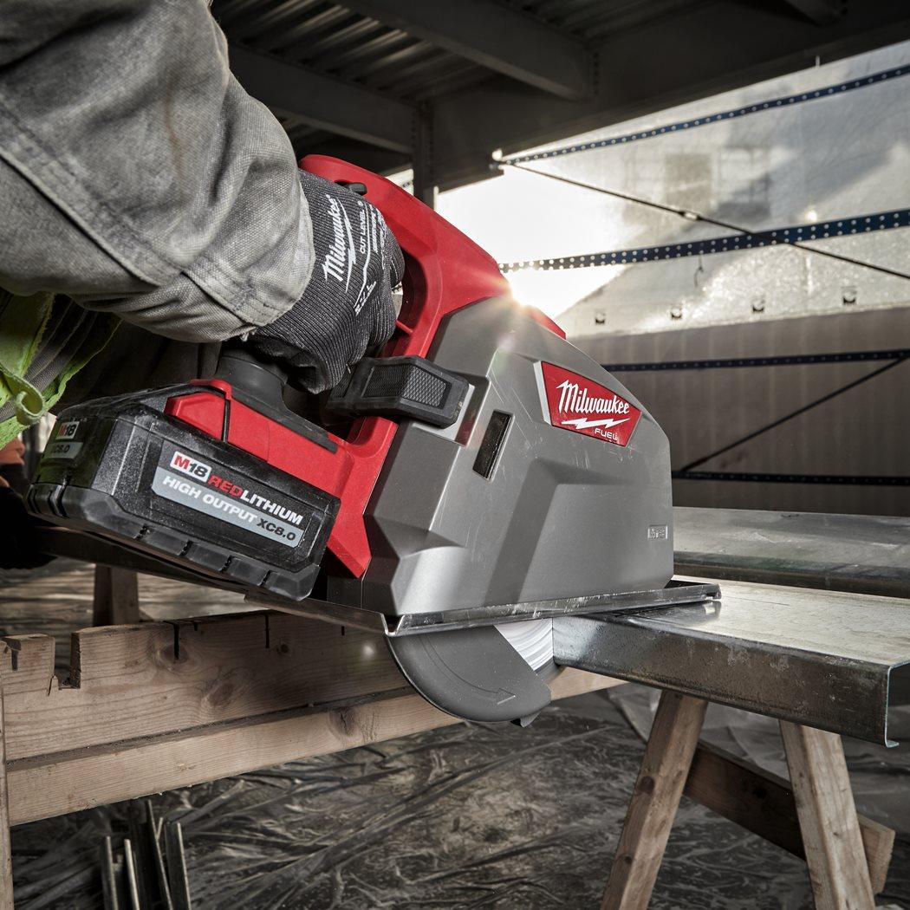
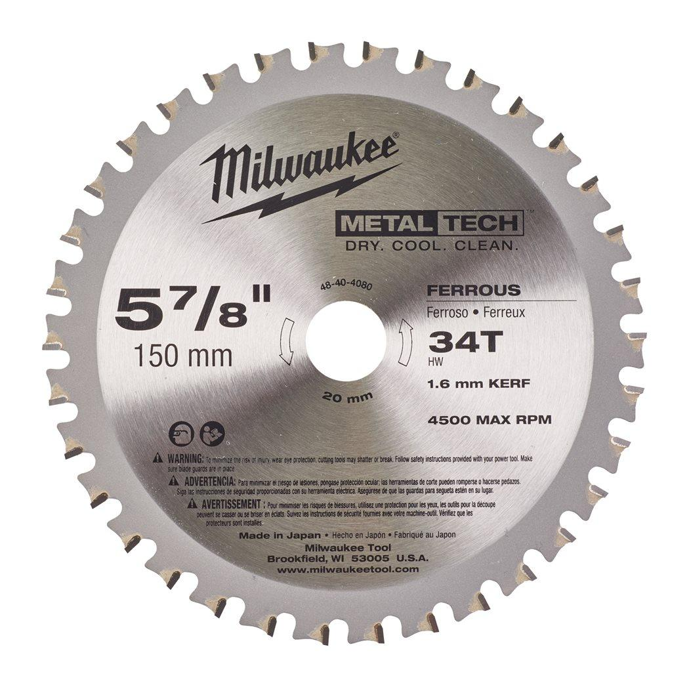

| Aluminium | ✔ |
| Angle iron | ✔ |
| Blade diameter (mm) | 150 |
| Bore size (mm) | 20 |
| Cutting width (kerf) (mm) | 1.6 |
| Material wall thickness (mm) | 1-2.5 |
| Materials suited for | Medium metal 1.5 - 4 mm|Thin metal 0.5 - 3 mm|Non ferrous metal (Cu/Al)|Corrugated steel sheets up to 2.5mm|sheet steel up to 2.5mm|Mild Steel |
| Mild steel | ✔ |
| No. of teeth | 34 |
| Pack quantity | 1 |
| Rebar | ✘ |
| Sandwich material (steel, foam, panels) | ✔ |
| Sheet steel up to 2.5mm | ✔ |
| Stainless steel sheets | ♦ |
| Steel channel | ✔ |
| Steel pipe | ✔ |
| Steel tube | ✔ |
| Article Number | 48404080 |
| EAN | 045242510283 |